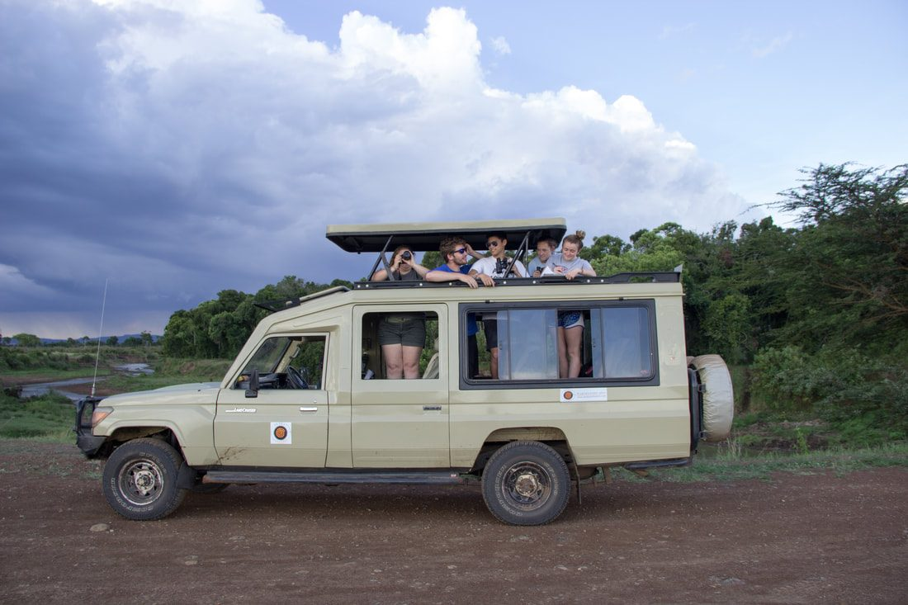

Scientific Outreach & DEI
I am firmly committed to science outreach and promoting diversity in STEM. All students should feel that they will be treated equitably and that their performance in class reflects merit and does not result from unconscious bias. I believe that classrooms, workplaces, and scientific research are enriched by the voices of people from diverse backgrounds with varying sets of experiences. I strive to create an environment of respect for people of all races, ethnicities, sexes, genders, gender identities, sexual orientations, socio-economic classes, ages, religions, physical abilities, and mental health statuses. Throughout my academic career, I will continue to make my classroom and office a safe place; I use safe place stickers and always include a diversity statement in my syllabi to work towards this aim. I strive to incorporate inclusive language in my lectures by avoiding the use of gendered pronouns and make sure to use my students preferred pronouns (if they feel comfortable sharing), avoid acronyms and jargon, and avoid the use of metaphors that may be specific to just my background or culture.
During my years at MSU, UZH, and now CUNY I've maintained involvement in several science outreach and community service organizations and events. Most recently, I've been involved in Project Biodiversify, a project that aims to increase the visibility and work of minority researchers while also providing educational tools about important or novel findings in Biology to Biology teachers.
As a faculty member of Hunter College, I recognize that the land where Hunter College stands is part of the unceded homelands of the Mohican, Wappinger, and Munsee Lenape peoples, who nurtured relations with these waters and soils for generations before forced displacement. As a professor here, my commitment is to steward this space not just through words, but by actions—centering equity in my classroom, challenging systemic harm, and honoring the resilience of Indigenous and marginalized communities whose histories are woven into this place. Let this acknowledgement remind me that teaching is a responsibility to both past and future.
I also recognize that the Mara Hyena Project conducts its research in the Maasai Mara of Kenya, on lands traditionally stewarded by the Maasai people—pastoralist communities whose livelihoods and cultural identity remain deeply connected to the land and its wildlife. I am grateful for the opportunity to work in these landscapes and for the knowledge, hospitality, and collaboration of Maasai community members and colleagues.
